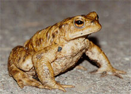

<body text="#000000" bgcolor="#FFFFFF" background="bg311.gif">
  
ЖАБА СЕРАЯ (Bufo bufo) Или обыкновенная, жаба сейчас распространена на территории бывшего Советского Союза — самая крупная из наших жаб (до 200 мм). Сверху она бурого цвета, снизу — грязно-белого или желтоватого. Распространена обыкновенная жаба в Северо - Западной Африке, в Европе, на Кавказе, в Сибири и на Дальнем Востоке, в Корее, Японии и Китае. На север доходит до 65° с. ш., в восточной части ареала северная граница распространения спускается много южнее, достигая берега Охотского моря. Населяет все варианты леса и степную полосу, по южной границе которой примерно проходит и южная граница распространения этого вида. В горы поднимается до 3000 м над уровнем моря. Обыкновенная жаба в средней полосе не так многочисленна, как живущие с ней бок о бок бурые лягушки. Она гораздо менее заметна, чем зеленая жаба, выдающая свое присутствие звонкой брачной трелью самца. По образу жизни обыкновенная жаба сходна с зеленой, но представляет собой вид, распространенный дальше на север. В связи с этим при повышении температуры ее мышцы раньше теряют возбудимость, чем мускулатура зеленой жабы. Она позднее зеленой жабы залегает в спячку и меньший срок бывает неактивна. Обыкновенная жаба менее плодовита, чем зеленая. Она откладывает 1200—6840 икринок. Процесс икрометания у нее не растянут, и она задерживается в водоеме всего 6—8 дней. Личинки покидают яйцо на ранних стадиях развития, когда есть лишь хвостовая почка и зачатки неразветвленных наружных жабр, которые исчезают затем через 8 дней. Почки задних конечностей появляются на 22-й день, на 32-й день задние конечности разделяются на суставы, на 42-й появляются передние конечности. Развитие головастиков обыкновенной жабы продолжается несколько медленнее, чем зеленой (на 4— 5 дней). Медленнее они и растут. Средний прирост их за день составляет 0,6 мм, и перед метаморфозом они достигают 40% от размеров взрослых. Половозрелость наступает на 3—4-м году жизни; у самцов раньше, чем у самок. Продолжительность жизни в неволе достигает 36 лет. 